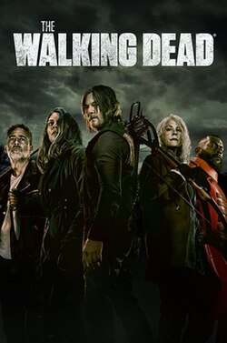
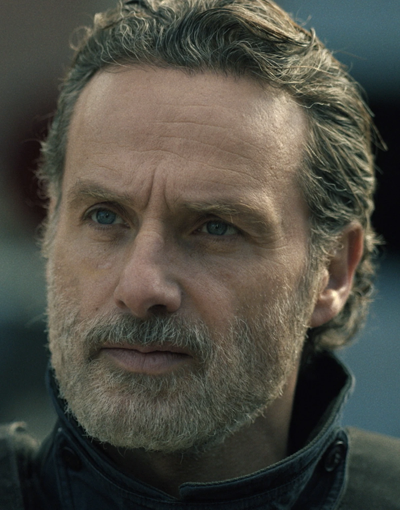
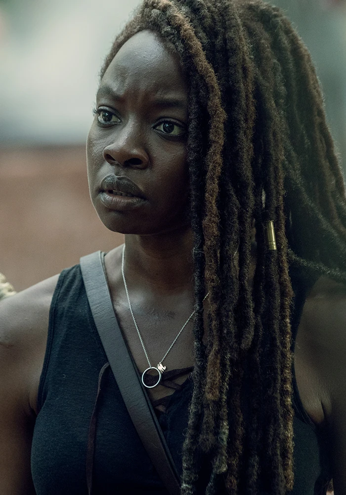
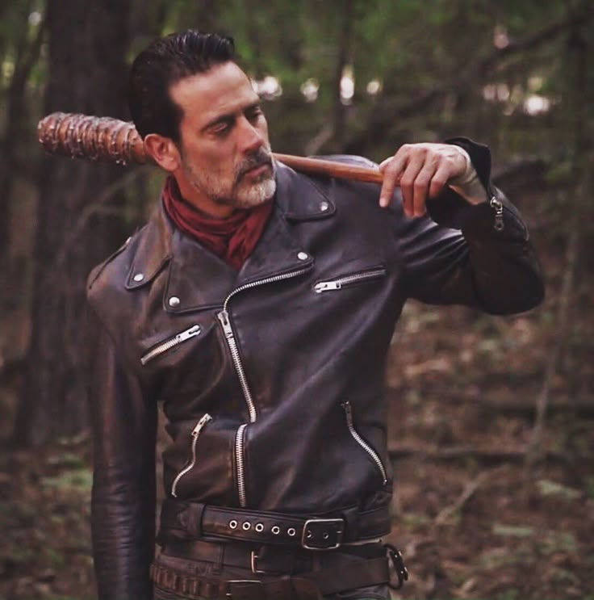
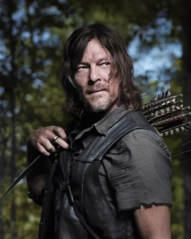
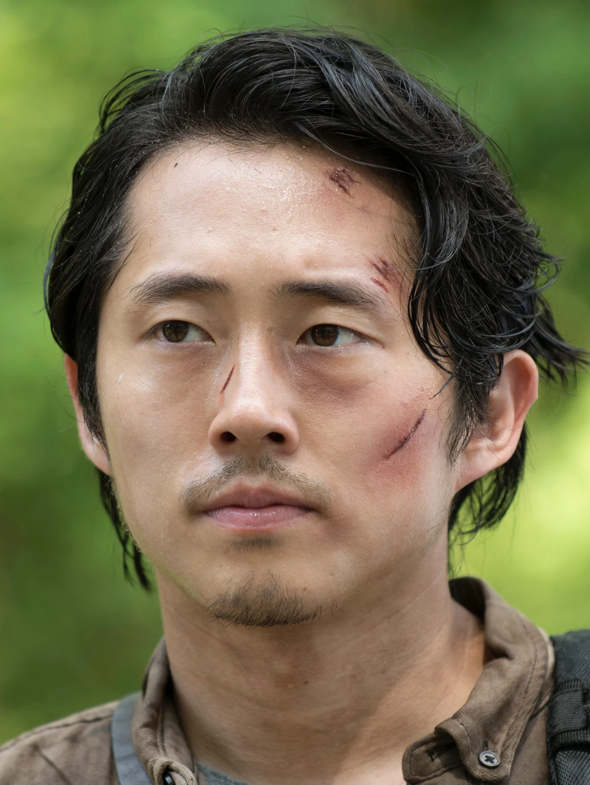
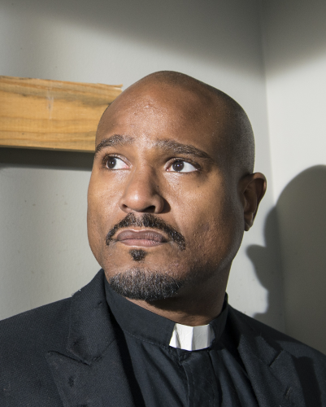
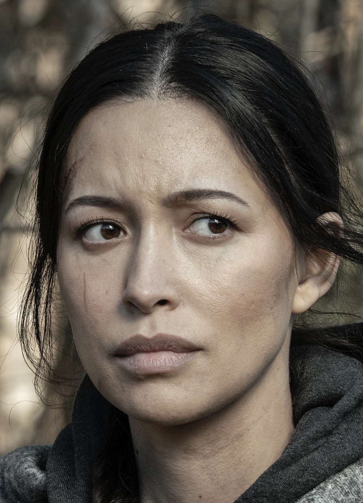

Universo de TWD
Conhecendo os melhores Personagens de TWD.
Conheça os personagens de The Walking Dead como se você já conhecesse ele a tempos.
Universo de TWD
Conheça os personagens de The Walking Dead como se você já conhecesse ele a tempos.

Conheça os personagens

Rick Grimes é um ex-vice-xerife que acorda de um coma em um mundo pós-apocalíptico dominado por zumbis. Ele se torna o líder pragmático de um grupo de sobreviventes, evoluindo de um homem idealista para um protetor implacável. Sua jornada é marcada pelo sacrifício pessoal e pela luta constante para manter sua família e sua humanidade vivas.

Michonne é uma ex-advogada que se transforma em uma das guerreiras mais icônicas do apocalipse. Armada com sua inseparável katana, ela inicialmente usa dois zumbis acorrentados como camuflagem antes de se integrar ao grupo. Ao longo da história, ela supera traumas profundos, assume papéis importantes de liderança e se torna a parceira de vida de Rick Grimes.
Carl Grimes é o filho de Rick e Lori que cresce e amadurece em meio ao apocalipse zumbi. Ele evolui de uma criança assustada para um sobrevivente endurecido e excelente atirador, marcado pela perda de um dos olhos. Antes de sua despedida, Carl se torna a bússola moral do grupo, defendendo um futuro de paz e reconstrução.

Negan é o carismático e implacável ex-líder dos "Salvadores", que governa pelo medo e pela extorsão com seu bastão de arame farpado, "Lucille". Introduzido como um dos maiores vilões ao assassinar membros do grupo de Rick, ele passa por uma complexa jornada de redenção ao longo dos anos. Ele evolui de um tirano brutal para um aliado solitário, marcado pelo arrependimento e pela busca por sobrevivência.

Daryl Dixon é um sobrevivente solitário que evolui de um caçador rebelde e rústico para o braço direito e irmão de consideração de Rick Grimes. Mestre no rastreamento e no uso de sua icônica besta, ele se torna um dos defensores mais leais e queridos do grupo. Sua jornada de amadurecimento e autodescoberta o transforma em um líder respeitado, que continua protegendo o futuro da humanidade.

Glenn Rhee é um ex-entregador de pizza que se torna um dos membros mais corajosos, ágeis e essenciais do grupo de sobreviventes. Conhecido por sua agilidade como coletor de suprimentos, ele é o coração moral da série, mantendo sua bondade, humanidade e otimismo mesmo nos momentos mais sombrios. Sua jornada é marcada pelo profundo amor por Maggie Greene e por uma das despedidas mais trágicas e impactantes de toda a história.
Maggie Greene é a filha mais velha do fazendeiro Hershel, que evolui de uma jovem camponesa para uma das líderes mais fortes e resilientes do apocalipse. Após sofrer perdas devastadoras, incluindo o brutal assassinato de seu marido Glenn, ela assume o comando da comunidade de Hilltop e se torna uma líder implacável. Sua jornada é marcada pela determinação feroz em proteger seu filho, Hershel Rhee, e reconstruir a civilização.

Padre Gabriel Stokes é um líder espiritual assombrado pelo terrível pecado de ter trancado as portas de sua igreja, deixando sua congregação morrer do lado de fora no início do apocalipse. Inicialmente covarde, frágil e rejeitado pelo grupo de Rick, ele passa por um dos maiores arcos de redenção da série. Com o tempo, Gabriel supera seus medos, aprende a lutar, perde a visão de um olho e se transforma em um dos líderes e atiradores mais frios, respeitados e implacáveis de Alexandria.

Rosita Espinosa é uma sobrevivente determinada, durona e altamente habilidosa em combate, táticas militares e primeiros socorros. Introduzida ao lado de Abraham e Eugene, ela rapidamente se torna uma das guerreiras mais técnicas, pragmáticas e indispensáveis do grupo de Rick. Sua jornada é marcada por sua resiliência diante de perdas trágicas, seu forte senso de dever e um instinto maternal feroz para proteger sua filha, Coco.

Oferecem construção robusta, boa potência e durabilidade, entregando um desempenho confiável com um custo menor que o das marcas tradicionais.

Destaca-se pelo bom equilíbrio, durabilidade do motor e ótimo desempenho no uso combinado com os próprios abrasivos da marca.

A Makita é lendária! Destaca-se pelo motor resistente, ergonomia e sistema de segurança a contragolpes e a engrenagem. É a queridinha!